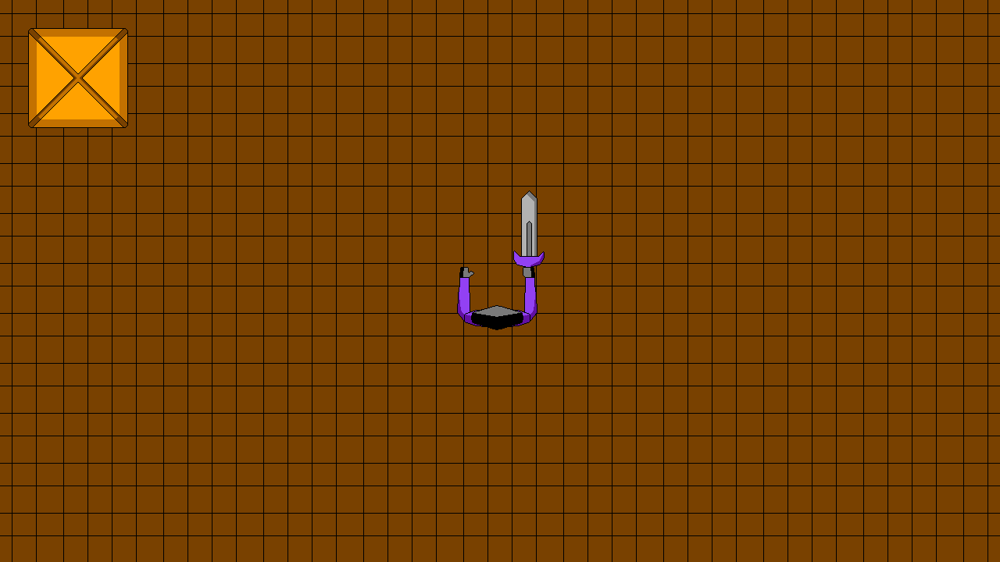
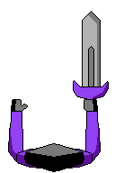
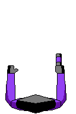
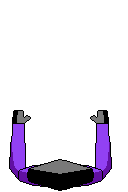
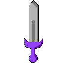
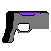
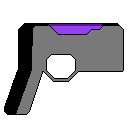
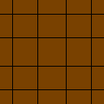
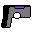
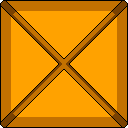

ALTRADICAL is a game that I was planning to work on before developing The Semiradical.
It got cancelled at 17 February 2026.
Also, I'm planning to improve this page and add more information.

Top-down shooter
You are playing as Yaromir. You will encounter cockroaches which are the enemies. You will also encounter Yaromir's different versions which are the bosses.
Advanced cockroaches decided to start war against humans. However, a lectreido named Yaromir decides to sort out the conflict.
Additionally, in the world appeared Yaromir's versions from the other worlds.
Both games have Yaromir as main character and other general things. It's because ALTRADICAL is based on The Semiradical. Despite that, ALTRADICAL isn't canon.












The concept originated lately, at the end of 2025 year. It was about a game mainly made for money.
The game would use own engine, probably written in C language with raylib library instead of ready-made engines.